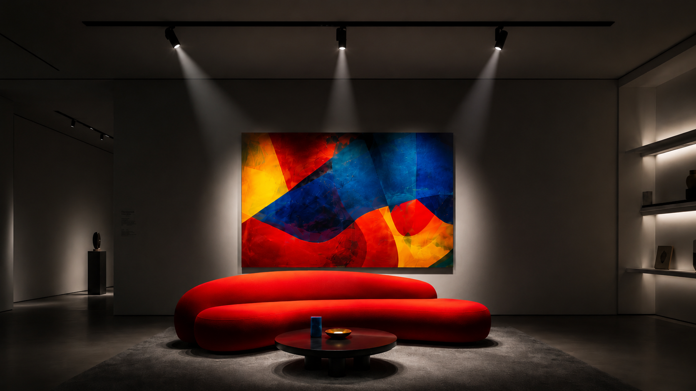

Beyond the Lumen: Why Color Fidelity is the True Measure of Premium Lighting

In high-end architecture, light is as much a building material as stone or wood. While lumens measure quantity, they say nothing about the integrity of the space. A premium project can be ruined by light that washes out textures or drifts in color temperature.
The Power of CRI 90+ and the R9 Factor
Most architects are familiar with the Color Rendering Index (CRI), but few look deeper into the R9 value. Standard CRI metrics often overlook deep red tones. Why does this matter? Because red is the most difficult color to render accurately under LED light.
The "Red Sofa" Test
Under standard CRI 80 lighting, a vibrant red designer sofa often looks muddy—nearly brownish. By prioritizing CRI 90+ with high R9 values, MAGNETRACK ensures that textures and pigments remain exactly as the designer intended.
Visual Harmony: The SDCM <3 Standard
Consistency is the hallmark of professional lighting. Nothing destroys a luxury interior faster than ten 'warm white' spotlights that all exhibit different shades of yellow. This is known as chromatic drift.
At MAGNETRACK, we maintain a strict binning process with SDCM <3 (MacAdam Ellipses). This technical threshold guarantees that whether you install 10 or 1,000 modules, the color consistency remains perfect across the entire project.
B2B Project Support
Designing for a luxury hotel or flagship retail store? Don't compromise on light quality. Our engineering team provides detailed IES files and spectrophotometer data for every module.
Request Technical Datasheet